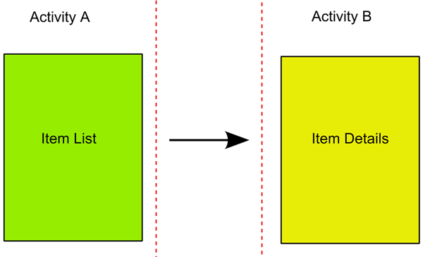
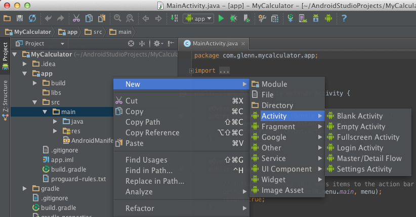
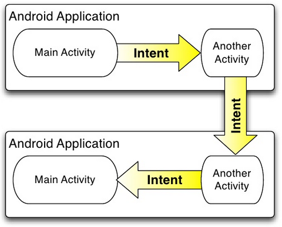

CSE 491: Android
Multiple Activities and Intents
Acknowledgment: The slides are of ones by Marty Stepp. http://cs193a.stanford.edu
Multiple activities
- Many apps have multiple activities.
- Example: address book app. main activity = contact list; clicking a contact goes to another activity for viewing details.
- Activity A can launch Activity B in response to an event.
- Data params can be passed and "returned" between them.

Adding an activity
- in Android Studio, right click "app" at left: New → Activity (empty)
- creates a new .XML file in res/layouts
- creates a new .java class in src/java
- adds information to AndroidManifest.xml about the activity (without this information, the app will not allow the activity)

Activities in Manifest
- Every activity has an entry in project's AndroidManifest.xml, added automatically by Android Studio:
1
2
3
4
5
6
7
8
9
10
11
12
13
14 <!-- AndroidManifest.xml -->
<manifest ...>
<application ...>
<activity android:name=".MainActivity"
android:label="@string/app_name" >
...
</activity>
<activity android:name=".SecondActivity"
android:label="@string/title_activity_second">
...
</activity>
</application>
</manifest>
Intents
- intent: an object representing a desired action;
- used as a bridge between activities, for one to invoke another
- the activity can be in the same app or in a different app
- can store extra data to pass as "parameters" to that activity
- second activity can "return" information back to the caller if needed

Uses of Intents
- to start an activity from another activity in the same app
- e.g.
Activity1launchesActivity2
- e.g.
- to start a service
- seen later; a service is a long-running app with no GUI
- system services include camera, phone dialer, music player, ...
- to broadcast a message to another app or service
- other apps can listen and respond to messages
- types of intents:
- explicit: Names a particular activity to launch. ("run
Activity2") - implicit: Describes task to perform; one of many apps could potentially handle it. ("launch web browser")
- explicit: Names a particular activity to launch. ("run
Creating an Intent
- To launch another activity (usually in response to an event), create an
Intentobject and callstartActivitywith it:1 2Intent intent = new Intent(this, ActivityName.class); startActivity(intent); - If you need to pass any parameters or data to the second activity, call
putExtraon the intent.- It stores "extra" data as key/value pairs, not unlike a
Map.
1 2 3 4Intent intent = new Intent(this, ActivityName.class); intent.putExtra("name", value); intent.putExtra("name", value); startActivity(intent); - It stores "extra" data as key/value pairs, not unlike a
Extracting extra data
- In the second activity that was invoked, you can grab any extra data that was passed to it by the calling activity.
- Access the
Intentthat spawned you by callinggetIntent. - The
Intenthas methods likegetIntExtra,getStringExtra, etc. to extract data that was stored inside the intent.
- Access the
1
2
3
4
5
6
7
8
9
10
11
12 public class SecondActivity extends Activity {
...
public void onCreate(Bundle savedState) {
super.onCreate(savedState);
setContentView(R.layout.activity_second);
// extract "extra" data from the intent that loaded me
Intent intent = getIntent();
String extra = intent.getStringExtra("name");
...
}
}
Intent methods (list)
| Method | Description |
|---|---|
getBooleanArrayExtra("name"), getBooleanExtra("name"), getByteArrayExtra("name"), getByteExtra("name"), getCharArrayExtra("name"), getCharExtra("name"), getDoubleArrayExtra("name"), getDoubleExtra("name"), getFloatArrayExtra("name"), getFloatExtra("name"), getIntArrayExtra("name"), getIntExtra("name"), getIntegerArrayListExtra("name"), getLongArrayExtra("name"), getLongExtra("name"), getParcelableArrayExtra("name"), getParcelableExtra("name"), getSerializableExtra("name"), getStringArrayExtra("name"), getStringArrayListExtra("name"), getStringExtra("name") |
return extra data of given type that is associated with the given key name |
getData() |
returns URI of associated data |
hasExtra("name") |
true if extra data exists with given key name |
putExtra("name", value); |
adds extra data with given key name |
putExtras(bundle); |
adds all key/value pairs from the given bundle/intent as extra data |
removeExtra("name"); |
delete the given extra data |
replaceExtras(bundle); |
wipe out all extra data and replace it w/ data from given bundle/intent |
setData(uri); |
sets URI of associated data |
setFlags(flags); |
various flags and settings |
Waiting for a result
- If calling activity wants to wait for a result from called activity:
- Call
startActivityForResultrather thanstartActivity.startActivityForResultrequires you to pass a unique ID number to represent the action being performed.- By convention, you declare a final
intconstant with a value of your choice. - The call to
startActivityForResultwill not wait; it will return immediately.
- Write an
onActivityResultmethod that will be called when the second activity is done.- Check for your unique ID as was passed to
startActivityForResult. - If you see your unique ID, you can ask the intent for any extra data.
- Check for your unique ID as was passed to
- Modify the called activity to send a result back.
- Use its
setResultandfinishmethods to end the called activity.
- Use its
- Call
Sending back a result
- In the second activity that was invoked, send data back:
- Need to create an
Intentto go back. - Store any extra data in that intent; call
setResultandfinish.
- Need to create an
1
2
3
4
5
6
7
8
9
10
11 public class SecondActivity extends Activity {
...
public void myOnClick(View view) {
// close this activity and send two results back
Intent intent = new Intent();
intent.putExtra("name1", value1);
intent.putExtra("name2", value2);
setResult(RESULT_OK, intent);
finish(); // stops/closes the current activity
}
}
Grabbing the result
1
2
3
4
5
6
7
8
9
10
11
12
13
14
15
16
17
18
19 public class FirstActivity extends Activity {
private static final int REQ_CODE = 123; // MUST be 0-65535
public void myOnClick(View view) {
Intent intent = new Intent(this, SecondActivity.class);
startActivityForResult(intent, REQ_CODE);
}
protected void onActivityResult(int requestCode,
int resultCode, Intent intent) {
super.onActivityResult(requestCode, resultCode, intent);
if (requestCode == REQ_CODE) {
// came back from SecondActivity
String data = intent.getStringExtra("name");
Toast.makeText(this, "Got back: " + data,
Toast.LENGTH_SHORT).show();
}
}
}
Implicit Intent (link)
- implicit intent: One that launches another app, without naming that specific app, to handle a given type of request or action.
- examples: invoke default browser; load music player to play a song
1
2
3
4
5
6
7
8
9
10
11 // make a phone call
Uri number = Uri.parse("tel:5551234");
Intent callIntent = new Intent(Intent.ACTION_DIAL, number);
// go to a web page in the default browser
Uri webpage = Uri.parse("http://www.stanford.edu/");
Intent webIntent = new Intent(Intent.ACTION_VIEW, webpage);
// open a map pointing at a given latitude/longitude (z=zoom)
Uri location = Uri.parse("geo:37.422219,-122.08364?z=14");
Intent mapIntent = new Intent(Intent.ACTION_VIEW, location);
Activity stack and Back button
- activity stack: Set of activities visited most recently.
- current activity is on "top" of stack; prior activity is below that; etc.
- When user presses Back/Up button or
finish()is called, the app pops the activity stack and goes back to the prior one.

Parent activity in manifest
- You can set a "parent" activity for a given activity to go back to.
- To set a parent activity, declare it in AndroidManifest.xml:
1
2
3
4
5
6
7
8
9
10
11
12
13
14
15 <manifest ...>
<application ...>
<activity android:name=".MainActivity"
android:label="@string/app_name" >
...
</activity>
<activity android:name=".SecondActivity"
android:label="@string/title_activity_second"
android:parentActivityName=".MainActivity" >
<!-- meta is for backward compatibility w/ Android < 4 -->
<meta-data android:name="android.support.PARENT_ACTIVITY"
android:value="com.example.myusername.myapplication.MainActivity" />
</activity>
</application>
</manifest>
Activities and Toolbar
- toolbar: A top-level menu of actions in an activity.
- replaces "menu" and "action bar" in past versions of Android
- identifies current activity/app to user
- make common actions prominent and available
- make less common actions available through a drop-down menu
- If your activity has a parent, its toolbar will have a "back" button or "up" button to return to the parent activity.
- or call:
getActionBar().setDisplayHomeAsUpEnabled(true);
- or call:
More about activity stack
- Navigating up to parent activity manually:
NavUtils.navigateUpFromSameTask(this); - Smashing and recreating your own activity stack:
1 2 3 4 5 6 7 8 9 10Intent upIntent = NavUtils.getParentActivityIntent(this); if (NavUtils.shouldUpRecreateTask(this, upIntent)) { // This activity is NOT part of this app's task TaskStackBuilder.create(this) // Add this activity's parents to back stack .addNextIntentWithParentStack(upIntent) // Navigate up to the closest parent .startActivities(); }
1
CSE 491: Android
Multiple Activities and Intents